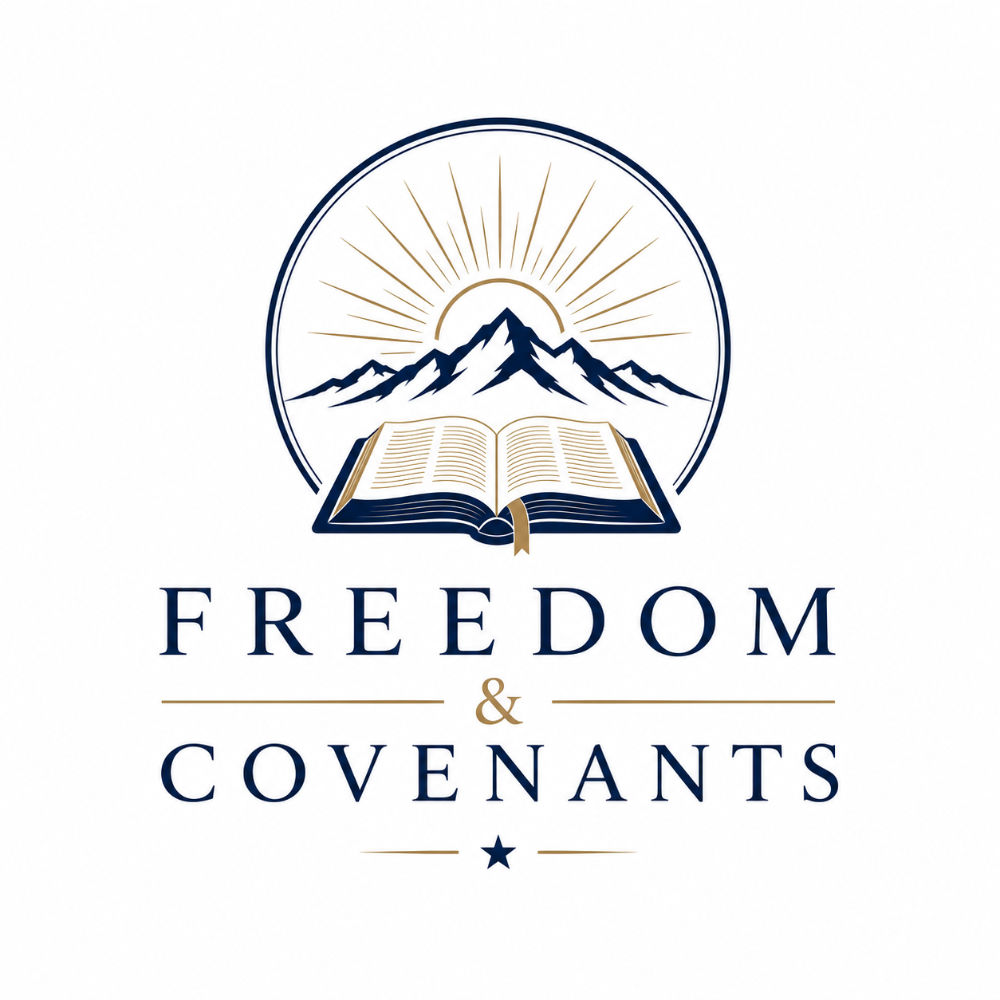
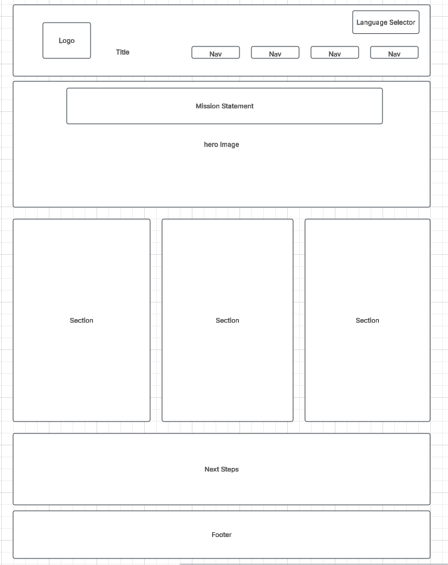
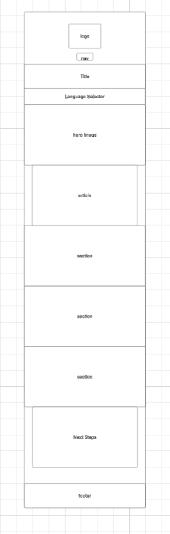

Site Name:

Freedom & Covenants
This name refers to covenants that are the foundation of a free nation. Only a covenant-keeping people can qualify for freedom.
Site Purpose:
This is an educational site to teach how covenant-keeping leads a nation to freedom. It will reveal some of the deliberate attacks on morality for the purpose of bringing people into captivity. It will provide a repository of recommended media. Media suggestions will be submitted through a form, for which the user will be thanked. The user will be able to select a translation of the content of the website to their language.
Scenarios:
What scriptural references support your claims?
How can I learn more?
Styling:
Color Scheme:
--primary-color: #081b4e
--secondary-color: #DAA520
Typography
Headers -- "Merriweather", serif;
Paragraphs -- "Roboto", sans-serif
Wireframes:
Large View

Phone View
